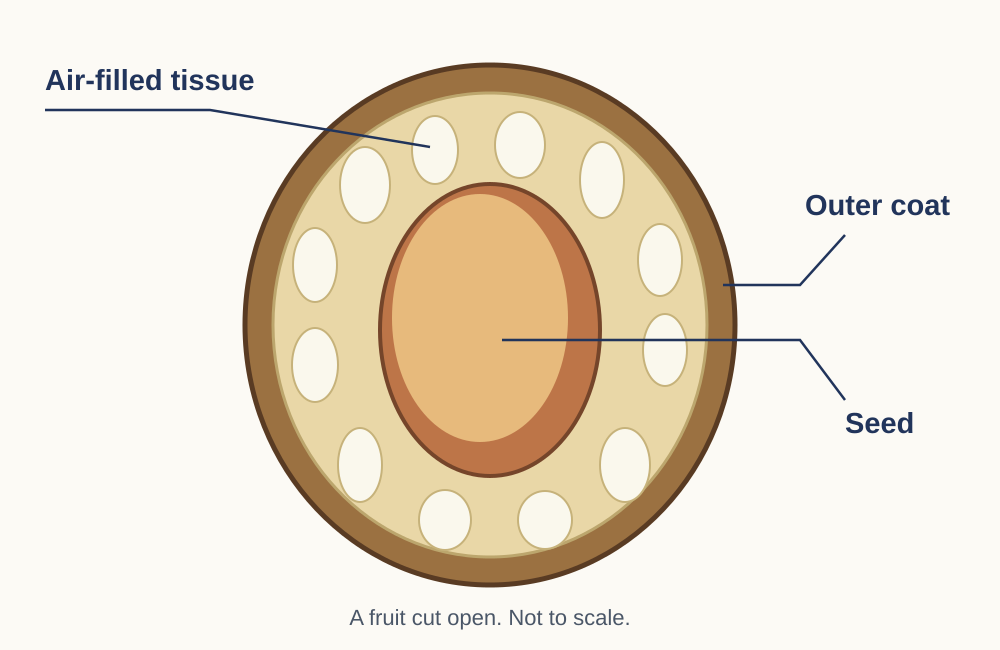

Plant parts
Model · not to scale
Use this picture to answer the question.
Look closely. Use what you can see to explain your answer.

Use this picture to answer the question.
Look closely. Use what you can see to explain your answer.